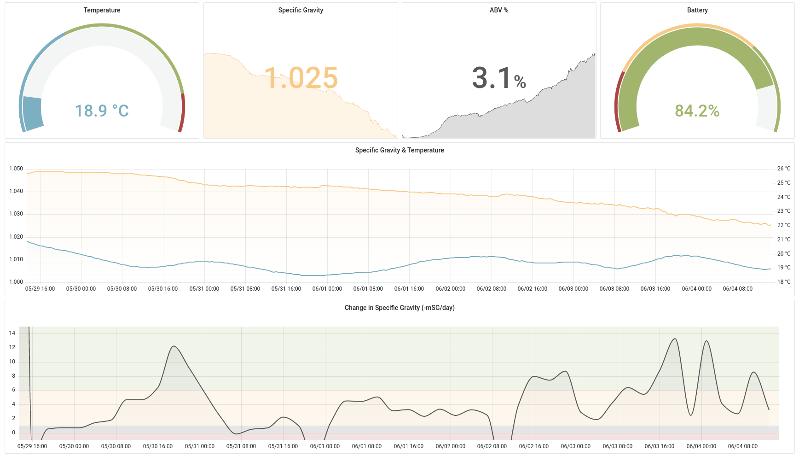
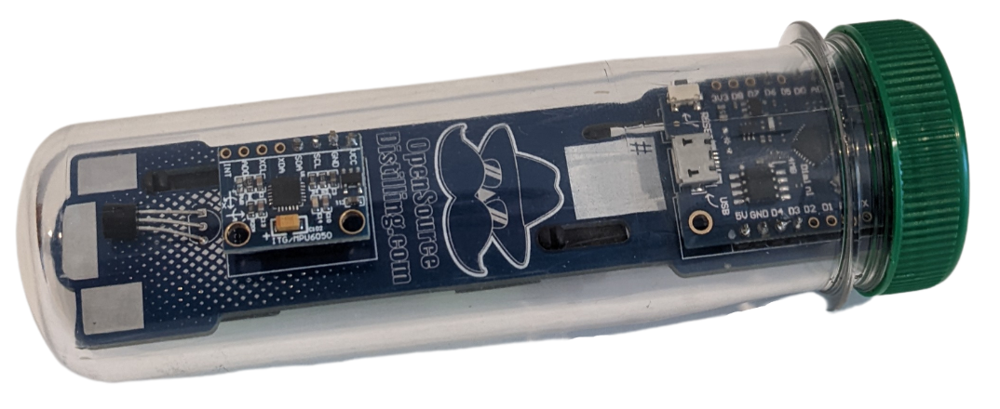
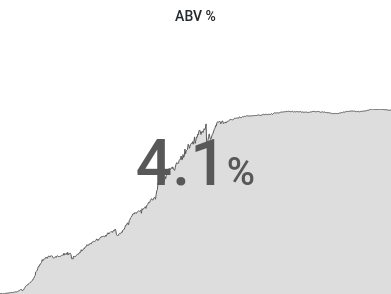

Building a homebrew monitoring dashboard with Grafana + iSpindel

I wanted a better way to track how my homebrews were going. In any brew, the most important metric to keep an eye on is the specific gravity - a measure of density. This will tell you where in the fermentation you’re at, how much further it has to go, and what the ABV% is. Checking this value periodically, will let you work out how quickly your brew is fermenting, and when might be a good time to add extra hops, and when it’s ready to bottle.
The analog way to do this is with a hydrometer. Take a small sample of your beer during fermentation, and take a reading off the hydrometer based on the level it floats at. This is fine if you only plan to do this a few times over the course of the fermentation, but any more frequently and it starts to become impractical and wasteful.
So go digital. There’s a few electronic hydrometers for beer brewing that all work on the same basic principle - you float a small water-tight device in your brew while it’s fermenting, and it periodically takes measurements and sends them off to a server for you to do whatever you want with. Some of these can be quite expensive and will tend to lock you into a closed-source ecosystem. Fortunately there’s an excellent open-source alternative in the iSpindel.

This is an entirely open-source design that you can assemble yourself at a fraction of the cost. It uses an ESP8266 and a couple of sensors to measure temperature and specific gravity of whatever it’s floating in. The density is calculated by measuring the angle that the iSpindel is floating at. In denser wort at the start of fermentation, it will float more horizontally, and then as the sugars are fermented, and the density of the brew drops, it will float more vertically. Measuring this angle will let us calculate the specific gravity, and the change in specific gravity will in turn lets us work out the ABV%.
The default setup for the iSpindel is to send data to one of a few options of third party services that have integrations to make getting up and running a quick and easy process. I’ve found though that these services tend to be quite limited in how you can choose to visualise the data and typically have limitations on how much data you can send and store without moving to a premium plan. Out of the box, the iSpindel also supports sending data to an influxdb instance, so I looked at putting together my own solution using that and Grafana to do the same thing but in a cheaper and more flexible way.
For this project I’m using a t2.micro aws instance running ubuntu. I’ve found this to be plenty for my use case. This might not be the case if I ever add more devices or if anyone other than me was checking the dashboard. I only run the server while a brew is in progress, which typically lasts a week, so the cost only ends up being a few dollars. There’s probably ways to bring this cost down further with other providers or hosting the server yourself, for example on a raspberry pi.
In terms of actual server set up, this was pretty straight forward, I just followed the official guides for installing InfluxDB and Grafana and then tweaked their configs slightly.
InfluxDB config
For influxdb, I added an admin user, and updated the config to require auth:
/etc/influxdb/influxdb.conf
[http]
enabled = true
bind-address = ":8086"
auth-enabled = true
log-enabled=true
write-tracing = false
pprof-enabled = true
pprof-auth-enabled = true
debug-pprof-enabled = true
ping-auth-enabled = true
Grafana config
And for Grafana, there were a few changes I made on the grafana config to support running on my domain with ssl:
/etc/grafana/grafana.ini
[server]
protocol = https
http_port = 3000
domain = my.custom.domain.com
root_url = https://my.custom.domain.com
cert_file = /path/to/cert.pem
cert_key = /path/to/key.pem
iSpindel config
On the iSpindel, I configured the following settings in the captive portal configuration screen:
Service Type: InfluxDB
Server Address: <my domain>
Server Port: 8086
InfluxDB db: ispindel
Username: admin
Password: <password set for influxdb admin>
Now, whenever the iSpindel runs, it will send its data to my server and it will be stored in the ispindel database in influxdb.
Dashboard setup
Setting up a dashboard involves configuring a new data source to point to the influxdb at localhost:8086. Once this is set up, I wrote InfluxQL queries to aggregate each of the metrics that the iSpindel reports into individual dashboard panels. For example, working out the ABV% using the current specific gravity and the starting specific gravity (set up as a dashboard variable):
SELECT abs($sg - mean("gravity"))*1.3125
FROM "measurements"
WHERE $timeFilter
GROUP BY time(30m) fill(null)
And then configuring as a Stat panel:

To Do
Some updates I want to incorporate in future:
- Use dynamic dns to automatically update the
A recordon my domain with the new server IP whenever it boots. - Automate creating shareable snapshots of the grafana dashboard. Grafana provides an API to do this. I would also want to automatically update the
CNAME recordon my domain to point to the newest snapshot url. - Alerts. Grafana supports alerts built on top of
InfluxQL, so I want to explore sending alerts when my brew is ready to bottle.